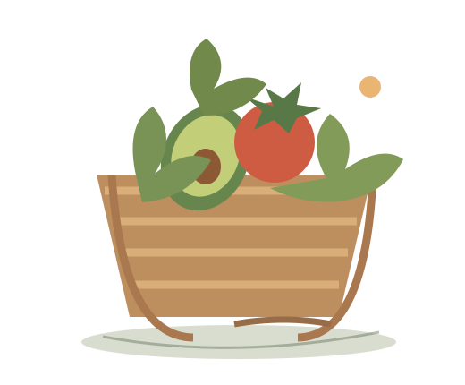
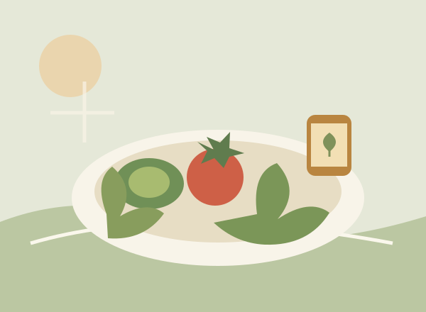

LO BUENO SE COMPARTE
Comer rico.
Sentirse bien.
Alimentos frescos, honestos y llenos de sabor. Elegidos con cuidado, para que cada comida se sienta como en casa.
Explora la tienda ↗Fresco cada día, cerca de ti
🥑🍅🍋
De pequeños productorescon mucho que ofrecer

✳ Lo fresco
te encuentra
COSECHA DE TEMPORADA · LIMAte encuentra
BUENO PARA TI · BONITO PARA EL MUNDO
✳ Frescura que se nota
✳ Origen que conocemos
✳ Hecho para compartir
✳ A un paso de tu mesa
UNA CANASTA CON HISTORIA
Lo bueno de cada día.
✳ Selección de temporada

DE NUESTRO MUNDO AL TUYO
Las cosas buenas
empiezan cerca.
Mimundo nació de una idea sencilla: merecemos saber de dónde viene lo que comemos. Por eso buscamos alimentos ricos, frescos y de origen cercano, y los acercamos a quienes disfrutan comer bien.
Conoce nuestra historia ↗Con cariño, JoseTU COMPRA, A TU MANERA
Prepara una venta.
Elige quién te atiende y arma una canasta que te haga feliz.
hecho con
cariño ✳
cariño ✳
⌄
J
Atención cercanaTu vendedor te ayudará con tu pedido.
✳ Agrega productos desde la tienda. Puedes ajustar las cantidades aquí.
02 — TU CANASTA
✳Lo que te llevas (0)
🧺Tu canasta empieza aquíAgrega algo rico desde la tienda.Ver productos ↗
Total de la ventaS/ 0.00
✳ Sin pagos en línea · coordinamos contigo
UN MUNDO MÁS RICO
Creemos en lo rico,
lo simple y lo cercano.
Alimentos que nos hacen bien, relaciones que nos hacen crecer. Esa es la manera Mimundo de disfrutar cada día.
100%selección cuidadosa
1 barriomuchas buenas historias
✳un mundo de sabor
PASA POR AQUÍ
Estamos cerquita.
En el corazón de Miraflores, con la canasta lista y una sonrisa.
⌖ Jr. Larco 1090, Miraflores, Lima ↗